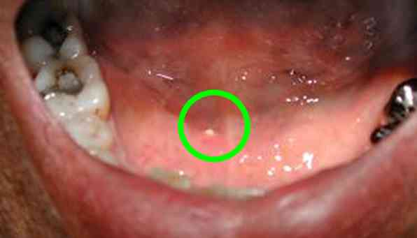

Bienvenue Sur Medical Education
Submandibulite aiguë bactérienne
Spécialité : infectieux / stomatologie /
Points importants
-
Le plus souvent secondaire à une lithiase salivaire
-
Collection = avis CMF
-
Traitement le souvent médicamenteux
-
Anatomie de la glande submandibulaire
_304 Anatomie de la glande submandibulaire
- Sécrète de la salive acheminée par le canal de Wharton qui s'abouche au plancher buccal par orifice saillant en dehors du frein lingual
Présentation clinique / CIMU
SIGNES FONCTIONNELS
Généraux
- Fièvre à 38-39°C
- AEG
Spécifiques
- Douleurs submandibulaires
- Dysphagie, odynophagie
- ± gêne respiratoire : rare, formes étendues
CONTEXTE
Terrain
- A tout âge mais plus fréquent chez l'adulte (30-40 ans) et l'homme (2/1)
Facteurs de risque
- Lithiase salivaire +++
EXAMEN CLINIQUE
Inspection
- Tuméfaction unilatérale sous-mandibulaire non adhérente à la mandibule
- Signes inflammatoires locaux : peau chaude, tendue, douloureuse et érythémateuse
- ± fistulisation endobuccale avec écoulement de pus
- Ostium du canal de Wharton inflammatoire ± pus
 _305 Photo Lithiase enclavée à l'orifice du canal de Wharton droit
Palpation
- Douleurs
- Pus à l'ostium du Wharton ou écoulement mucopurulent
- Palpation bidigitale du plancher buccal à la recherche d'une lithiase et mobilisant la glande par rapport à la mandibule
- ± collection
EXAMENS PARACLINIQUES SIMPLES
- Prélèvement de pus à l'écouvillon
CIMU
- Tri 4
Signes paracliniques
BIOLOGIQUE
-
Non indispensable si diagnostic évident
-
Hyperleucocytose neutrophile
-
Augmentation CRP
-
Hémocultures habituellement négatives
-
Ionogramme sanguin et créatinémie (avant TDM)
-
Prélèvement bactériologique :
-
pus : flore polymicrobienne à prédominance streptococcique le plus souvent
IMAGERIE
- pus : flore polymicrobienne à prédominance streptococcique le plus souvent
Clichés occlus aux endobuccaux antérieur et postérieur et profil strict
- Lithiase salivaire
Panoramique dentaire
- Lithiase salivaire
- Etat dentaire
Echographie cervicale
- Glande submandibulaire augmentée de volume
- ± collection et localisation
- Lithiase(s) salivaire(s
Scanner cervico-facial avec injection de produit de contraste : si suspicion de collection et d'extension cellulitique
- Glande submandibulaire augmentée de volume
- ± collection et localisation
- Lithiase(s) salivaire(s)
- Infection de voisinage
_306 Photo Lithiase sub-mandibulaire droite
_308 Photo Clichés occlusaux montrant lithiase dans le canal de Wharton
_307 Photo Pus au canal de Wharton gauche
Diagnostic étiologique
-
Lithiase salivaire
Diagnostic différentiel
Diagnostic différentiel
Colique salivaire
- Douleurs et tuméfaction mais absence de signes infectieux
Whartonite
- Cellulite circonscrite du plancher buccal
- Se distingue de la cellulite d'origine dentaire par la présence d'un sillon libre (pas d'adhérence) entre la mandibule et la collection
Adénite cervicale, adénophlegmon
Tumeurs submandibulaires bénignes ou malignes
- Tuméfaction ancienne, pas de contexte infectieux
Traitement
TRAITEMENT PREHOSPITALIER / INTRAHOSPITALIER
Stabilisation initiale
- Urgence à évaluer en fonction de la gêne respiratoire de l'âge, l'état général du patient, la dysphagie et l'existence ou pas d'une collection à drainer
- A jeun
- Si besoin, pose VVP pour antibiothérapie et antalgiques IV après prélèvements bactériologiques
MEDICAMENTS
- Antibiothérapie IV ou PO (selon le tableau clinique et paraclinique) par amoxicilline + ac. clavulanique (Augmentin®) ou macrolide + imidazolé (Birodogyl®) à adapter en fonction de l'antibiogramme
- Spasfon® PO ou IV
- Antalgiques à adapter en fonction de l'EVA ou l'EN
Surveillance
CLINIQUE
-
Gêne respiratoire, dysphagie, signes de choc, fièvre, état général, douleurs
-
FR, PA, FC, SpO2/h
PARACLINIQUE
-
NFS, CRP
Devenir / orientation
EN PREHOSPITALIER
Devenir / orientation
EN PREHOSPITALIER
Transport aux urgences
- Si absence de signes de choc septique et de gène respiratoire
Transport en réanimation
- Si signes de choc septique ou gène respiratoire
EN INTRAHOSPITALIER
Critères d'admission en hospitalisation
- Gêne respiratoire et/ou dysphagie importante
- Syndrome infectieux sévère notamment chez un sujet âgé
- Collection nécessitant un drainage chirurgical : avis CMF en urgence
Critères de sortie
- Syndrome infectieux modéré chez un sujet jeune sans ATCD particulier
- Absence de collection à drainer, de gène respiratoire ou de dysphagie importante
Ordonnance de sortie
- Antibiothérapie PO : Augmentin® 1 gx3/j pendant 10 jours ou Dalacine® 300 mg x2/j + Flagyl® 500 mg x3/j
- Spasfon® : 2 cp x 3/j QSP 10 jours
- Antalgiques PO à adapter en fonction de l'EVA ou l'EN pendant 10 jours
- Bains de bouche à base de chlorhexidine après chaque repas pendant 10 jours
- Sialogogues : teinture mère de Jaborandi : XXX gouttes x 3 /j dans un ½ verre d'eau 10 jours
Recommandations de sortie
- Consultation de contrôle à 48h par un chirurgien maxillo-facial
- Massages submandibulaires x 6/j pour drainer le pus jusqu'à la guérison complète (de l'angle mandibulaire vers la symphyse)
- Boissons abondantes (favorisent évacuation du pus par le canal de Wharton)
- Bonne hygiène bucco-dentaire
- Soins dentaires
- Surveillance de la fièvre, des signes inflammatoires locaux et de la température tous les jours par le patient
Bibliographie
-
Bado F, Maladière E et Guilbert F. Lithiase salivaire. Encycl Méd Chir (Editions Scientifiques et Médicales Elsevier SAS, Paris, tous droits réservés), Stomatologie, 22-057-A-15, 2001, 5 p.
Auteur(s) : Aymeric BARRIER, Arnaud RIGOLET